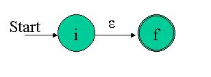
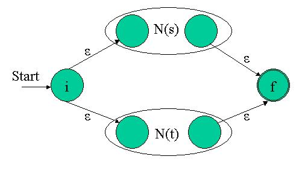
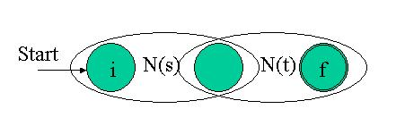
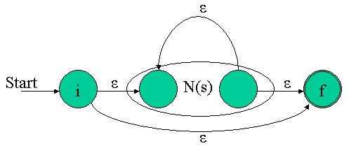

Algorithmic Forays Part 4
|
|
ADVERTISEMENT |
In the last article, I presented the three main techniques in use for generating recognizers from regular expressions. Just to remind you, the techniques are:
- Build a NFA from the regex. "Simulate" the NFA to recognize input.
- Build a NFA from the regex. Convert the NFA to a DFA. Simulate the DFA to recognize input.
- Build a DFA directly from the regex. Simulate the DFA to recognize input.
At first, I was determined to spare you from the whole DFA/NFA discussion and just use the third - direct DFA - technique for recognizer generation. Then, I changed my mind, for two reasons. First, the distinction between NFAs and DFAs in the regex world is important. Different tools use different techniques (for instance, Perl uses NFA while lex and egrep use DFA), and it is valuable to have at least a basic grasp of these topics. Second, and more important, I couldn't help falling to the charms of the NFA-from-regex construction algorithm. It is simple, robust, powerful and complete – in one word, beautiful.
So, I decided to go for the second technique.
Construction of a NFA from a regular expression
Recall the basic building blocks of regular expressions: eps which represents "nothing" or "no input"; characters from the input alphabet (we used a and b most often in these articles); characters may be concatenated, like this: abb; alternation a|b meaning a or b; the star * meaning "zero or more of the previous"; and grouping ().
What follows is Thompson's construction - an algorithm that builds a NFA from a regex. The algorithm is syntax directed, in the sense that it uses the syntactic structure of the regex to guide the construction process.
The beauty and simplicity of this algorithm is in its modularity. First, construction of trivial building blocks is presented.
For eps, construct the NFA:

Here i is a new start state and f is a new accepting state. It's easy to see that this NFA recognizes the regex epsFor some a from the input alphabet, construct the NFA:

Again, it's easy to see that this NFA recognizes the trivial regex a.
Now, the interesting part of the algorithm: an inductive construction of complex NFAs from simple NFAs. More specifically, given that N(s) and N(t) are NFA's for regular expressions s and t, we'll see how to combine the NFAs N(s) and N(t) according to the combination of their regexes.
For the regular expression s|t, construct the following composite NFA N(s|t):

The eps transitions into and out of the simple NFAs assure that we can be in either of them when the match starts. Any path from the initial to the final state must pass through either N(s) or N(t) exclusively. Thus we see that this composite NFA recognizes s|tFor the regular expression st (s and then t), construct the composite NFA NFA(st):

The composite NFA will have the start state of N(s) and the end state of N(t). The accepting (final) state of N(s) is merged with the start state of N(t). Therefore, all paths going through the composite NFA must go through N(s) and then through N(t), so it indeed recognizes N(st).For the regular expression s*, construct the composite NFA N(s*):

Note how simply the notion of "zero or more" is represented by this NFA. From the initial state, either "nothing" is accepted with the eps transition to the final state or the "more than" is accepted by going into N(s). The eps transition inside N(s) denotes that N(s) can appear again and again.For the sake of completeness: a parenthesized regular expression (s) has the same NFA as s, namely N(s).
As you can see, the algorithm covers all the building blocks of regular expressions, denoting their translations into NFAs.
An example
If you follow the algorithm closely, the following NFA will result for (our old friend,) the regex (a|b)*abb: 
Sure, it is much larger than the NFA we saw in the previous article for recognizing the same regex, but this NFA was automatically generated from a regex description using Thompson's construction, rather than crafted by hand.
Let's see how this NFA was constructed:
First, it's easy to note that states 2 and 3 are the basic NFA for the regex a.
Similarly, states 4 and 5 are the NFA for b.
Can you see the a|b ? It's clearly states 1,2,3,4,5,6 (without the eps transition from 6 to 1).
Parenthesizing (a|b) doesn't change the NFA
The addition of states 0 and 7, plus the eps transition from 6 to 1 is the star on NFA(a|b), namely states 0 - 7 represent.
The rest is easy. States 8 - 10 are simply the concatenation of (a|b)* with abb.
Try to run a few strings through this NFA until you convince yourself that it indeed recognizes (a|b)*abb. Recall that a NFA recognizes a string when the string's characters can be spelled out on some path from the initial to the final state.
Implementation of a simple NFA
At last, let's get our hands on some code. Now that we know the theory behind NFA-from-regex construction, it's clear that we will be doing some NFA manipulations. But how will we represent NFAs in code?
NFA is not a trivial concept, and there are full-blown implementations for general NFAs that are far too complex for our needs. My plan is to code as simple an implementation as possible - one that will be enough for our needs and nothing more. After all, the regex recognizing engine is not supposed to expose its NFAs to the outer world - for us a NFA is only an intermediate representation of a regular expression, which we want to simulate in order to "accept" or "reject" input strings.
My philosophy in such cases is the KISS principle: "Keep It Simple, Stupid". The goal is first to code the simplest implementation that fits my needs. Later, I have no problem refactoring parts of the code and inserting new features, on an as-needed basis.
A very simple NFA implementation is now presented. We will build upon it in future articles, and for now it is enough just to demonstrate the concept. Here is the interface:
#ifndef NFA_H
#define NFA_H
#include <vector>
using namespace std;
// Convenience types and constants
//
typedef unsigned state;
typedef char input;
enum {EPS = -1, NONE = 0};
class NFA
{
public:
// Constructed with the NFA size (amount of states), the
// initial state and the final state
//
NFA(unsigned size_, state initial_, state final_);
// Adds a transition between two states
//
void add_trans(state from, state to, input in);
// Prints out the NFA
//
void show(void);
private:
bool is_legal_state(state s);
state initial;
state final;
unsigned size;
vector<vector<input> > trans_table;
};
#endif // NFA_H
As promised, the public interface is kept trivial, for now. All we can do is create a NFA object (specifying the amount of states, the start state and the final state), add transitions to it, and print it out. This NFA will then consist of states 0 .. size-1, with the given transitions (which are single characters). Note that we use only one final state for now, for the sake of symplicity. Should we need more than one, it won't be difficult to add.
A word about the implementation: I don't want to go deep into graph-theory here (if you're not familiar with the basics, a web search can be very helpful), but basically a NFA is a directed graph. It is most common to implement a graph using either a matrix or an array of linked lists. The first implementation is more speed efficient, the second is better space-wise. For our NFA I picked the matrix (vector of vectors), mostly because (in my opinion) it is simpler.
The classic matrix implementation of a graph has 1 in cell (i, j) when there is an edge between vertex i and vertex j, and 0 otherwise.
A NFA is a special graph, in the sense that we are interested not only in whether there is an edge, but also in the condition for the edge (the input that leads from one state to another in FSM terminology). Thus, our matrix holds inputs (a nickname for chars, as you can see). So, for instance, 'c' in trans_table[i][j] means that the input 'c' leads from state i to state j in our NFA.
Here is the implementation for the NFA class:
#include <iostream>
#include <string>
#include <cassert>
#include <cstdlib>
#include "nfa.h"
using namespace std;
NFA::NFA(unsigned size_, state initial_, state final_)
{
size = size_;
initial = initial_;
final = final_;
assert(is_legal_state(initial));
assert(is_legal_state(final));
// Initialize trans_table with an "empty graph", no transitions
// between its states
//
for (unsigned i = 0; i < size; ++i)
{
vector<input> v;
for (unsigned j = 0; j < size; ++j)
{
v.push_back(NONE);
}
trans_table.push_back(v);
}
}
bool NFA::is_legal_state(state s)
{
// We have 'size' states, numbered 0 to size-1
//
if (s < 0 || s >= size)
return false;
return true;
}
void NFA::add_trans(state from, state to, input in)
{
assert(is_legal_state(from));
assert(is_legal_state(to));
trans_table[from][to] = in;
}
void NFA::show(void)
{
cout << "This NFA has " << size << " states: 0 - " << size - 1 << endl;
cout << "The initial state is " << initial << endl;
cout << "The final state is " << final << endl << endl;
for (unsigned from = 0; from < size; ++from)
{
for (unsigned to = 0; to < size; ++to)
{
input in = trans_table[from][to];
if (in != NONE)
{
cout << "Transition from " << from << " to " << to << " on input ";
if (in == EPS)
{
cout << "EPS" << endl;
}
else
{
cout << in << endl;
}
}
}
}
}
The code is very simple, so you should have no problem understanding what every part of it does. To demonstrate, lets see how we would use this class to create the NFA for (a|b)*abb - the one we built using Thompson's construction earlier in this article (only the driver code is included):
#include "nfa.h"
int main()
{
NFA n(11, 0, 10);
n.add_trans(0, 1, EPS);
n.add_trans(0, 7, EPS);
n.add_trans(1, 2, EPS);
n.add_trans(1, 4, EPS);
n.add_trans(2, 3, 'a');
n.add_trans(4, 5, 'b');
n.add_trans(3, 6, EPS);
n.add_trans(5, 6, EPS);
n.add_trans(6, 1, EPS);
n.add_trans(6, 7, EPS);
n.add_trans(7, 8, 'a');
n.add_trans(8, 9, 'b');
n.add_trans(9, 10, 'b');
n.show();
return 0;
}
This would (quite expectedly) result in the following output:
This NFA has 11 states: 0 - 10 The initial state is 0 The final state is 10 Transition from 0 to 1 on input EPS Transition from 0 to 7 on input EPS Transition from 1 to 2 on input EPS Transition from 1 to 4 on input EPS Transition from 2 to 3 on input a Transition from 3 to 6 on input EPS Transition from 4 to 5 on input b Transition from 5 to 6 on input EPS Transition from 6 to 1 on input EPS Transition from 6 to 7 on input EPS Transition from 7 to 8 on input a Transition from 8 to 9 on input b Transition from 9 to 10 on input b
As I mentioned earlier: as trivial as this implementation may seem at the moment, it is the basis we will build upon in future articles. Presenting it in small pieces will, hopefully, make the learning curve of this difficult subject less steep for you.
© Copyright by Eli Bendersky, 2003. All rights reserved.
Discuss this article in the forums
Date this article was posted to GameDev.net: 6/7/2004
(Note that this date does not necessarily correspond to the date the article was written)
See Also:
Featured Articles
General
© 1999-2011 Gamedev.net. All rights reserved. Terms of Use Privacy Policy
Comments? Questions? Feedback? Click here!